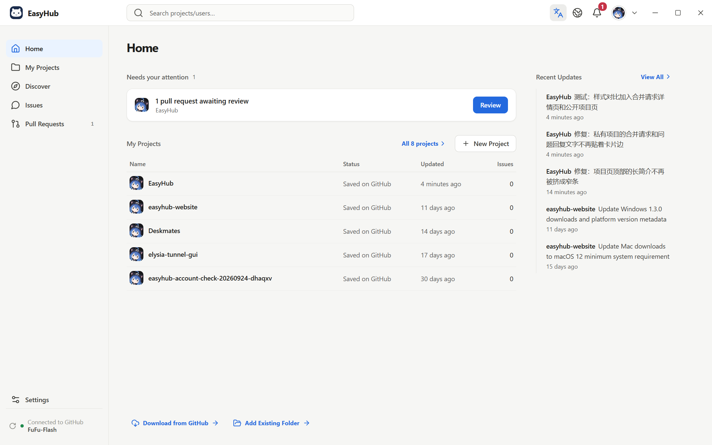

Publish from a folder
EasyHub finds added, changed and deleted files. Tick what to include, write a short note and click Publish code. Anything you leave unticked stays on your computer.
EasyHub is a GitHub app for beginners. Pick a folder, write a line about what changed, and publish with one click. Issues, pull requests and releases live in the same place.

Features
EasyHub finds added, changed and deleted files. Tick what to include, write a short note and click Publish code. Anything you leave unticked stays on your computer.
Before publishing, EasyHub checks GitHub for newer changes. If the same file changed in both places, you see both versions and choose which to keep.
Add a version number, notes and download files such as installers. Preview before you publish, and pick up unfinished drafts later.
Waiting for you on the home page lists issues to answer and pull requests to review. See what changed, then merge or close.
Add your own API key and AI summarizes changes and flags possible problems. You see what will be sent first, and the final call is always yours.
Search public projects and people, and browse EasyHub Trending for today or this week. Translate READMEs and issues with one click.
How it works
Approve access in your browser. No separate EasyHub account needed.
Add a folder you already have, download one of your GitHub projects, or start a new one.
Check which files changed, describe the update and click Publish code.
Not ready to sign in? Try the demo project first. Nothing is uploaded to GitHub.
Download
Free on every platform. Use the desktop app to create and publish, and Android to check projects, reply to issues and review pull requests on the go.
64-bit Windows
Installer about 83 MB; the portable version runs without installing
Downloads from GitHub. If GitHub is unreachable, get 1.3.0 from Gitee; 1.4.0 is not on Gitee yet.
Apple silicon Mac
macOS 12 or later, DMG about 70 MB
Not yet notarized by Apple, so macOS blocks the first launch. Follow the install guide to allow it.
Android 7.0 or later
Compact package for most phones, about 26 MB
If it does not install, use the universal package (GitHub · Gitee). Publishing code needs the desktop app.